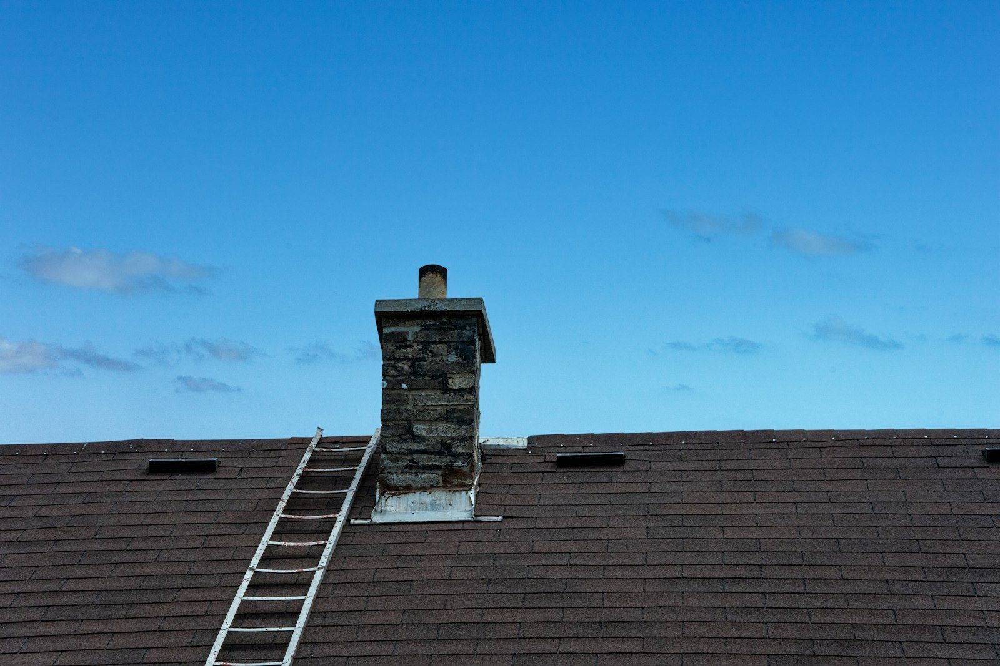
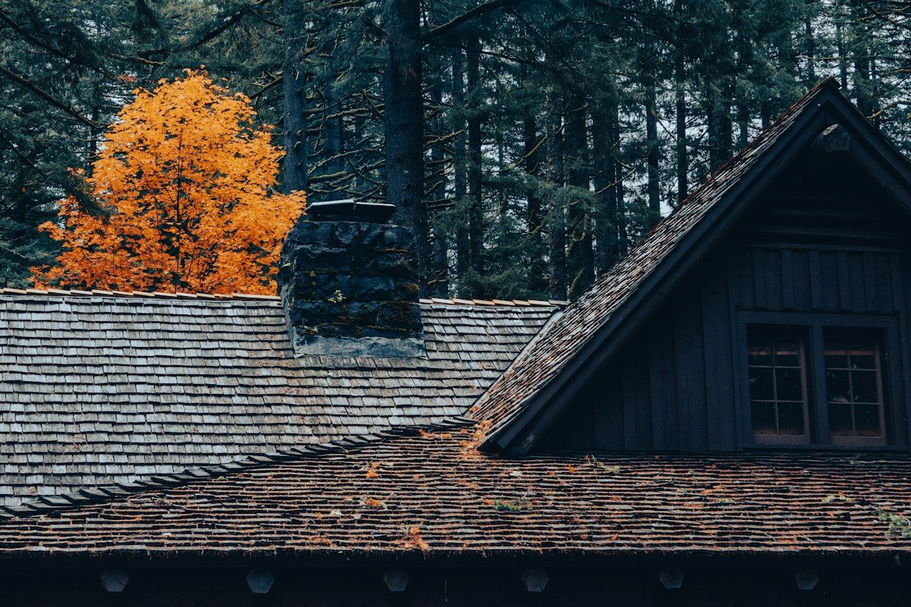
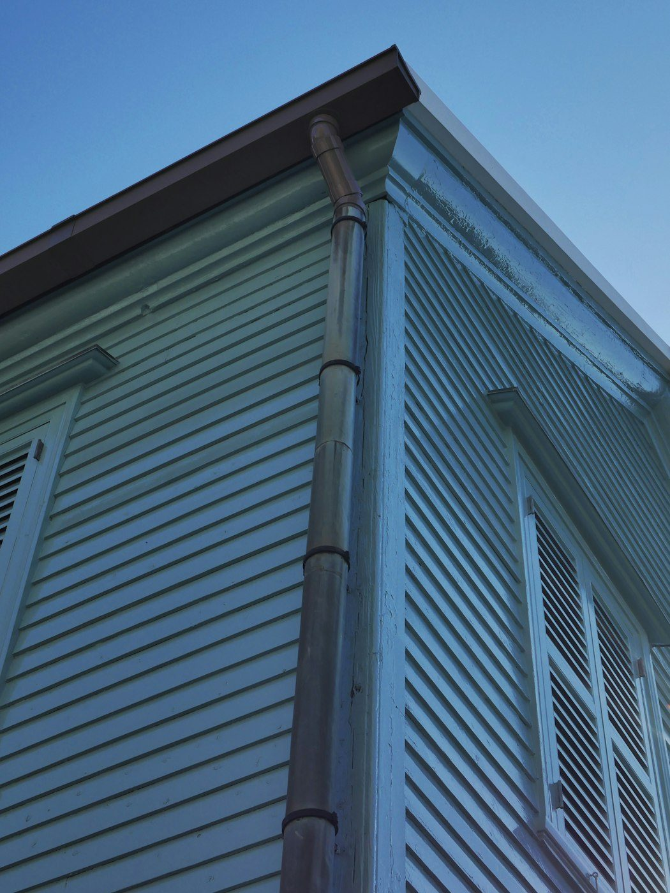
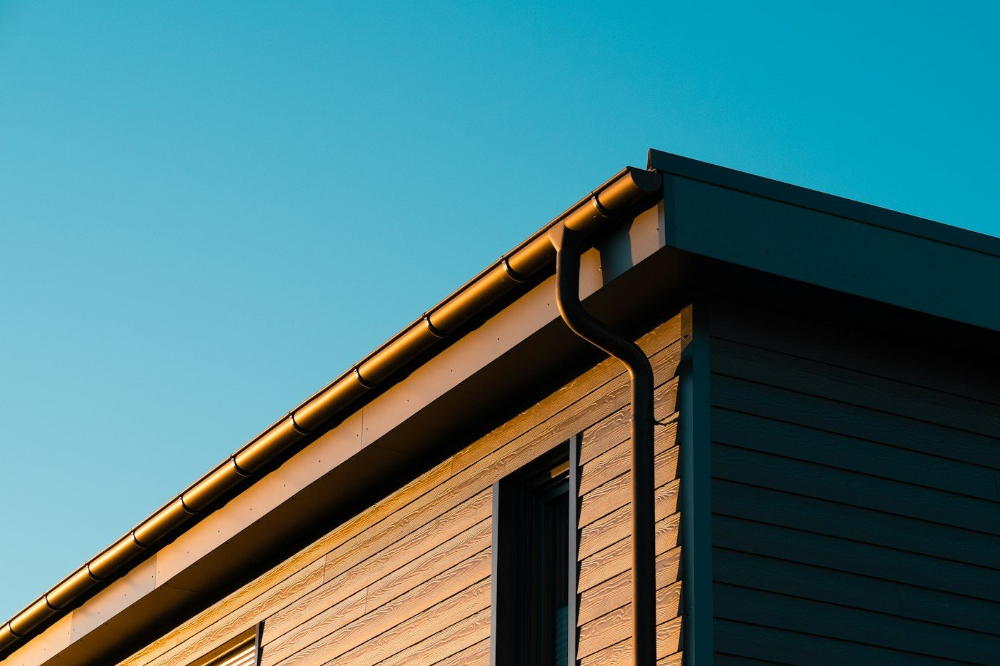
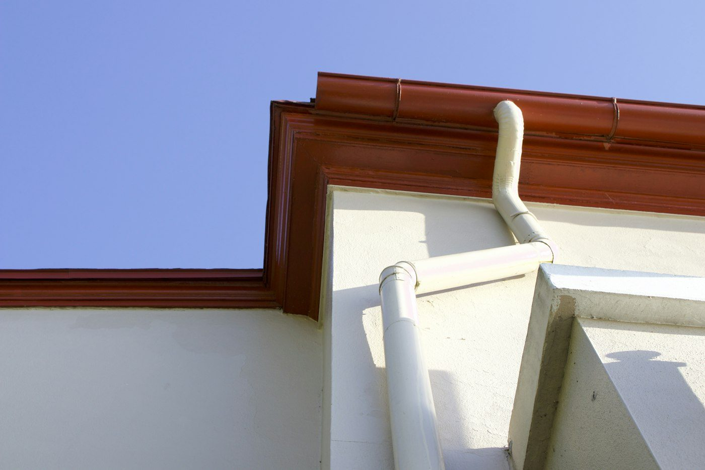
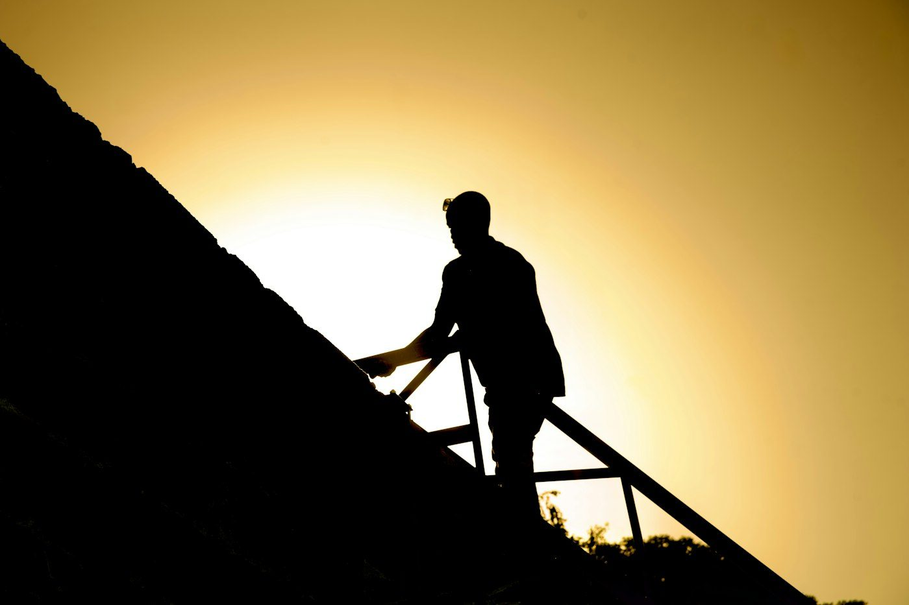
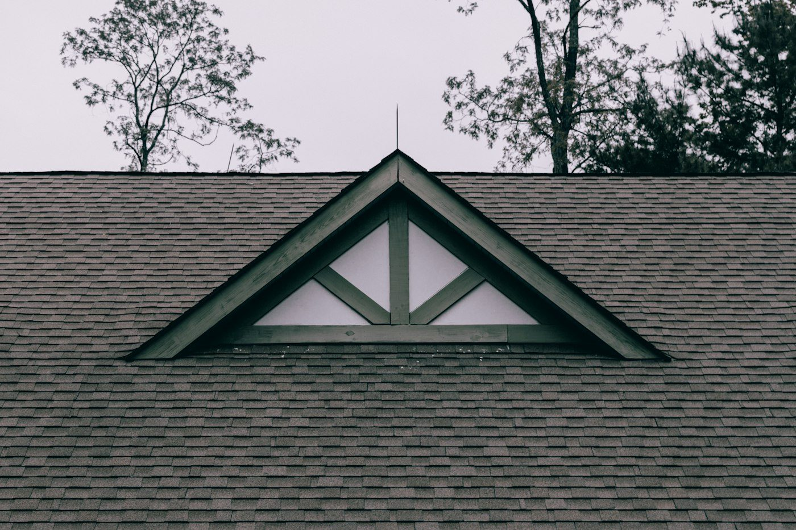
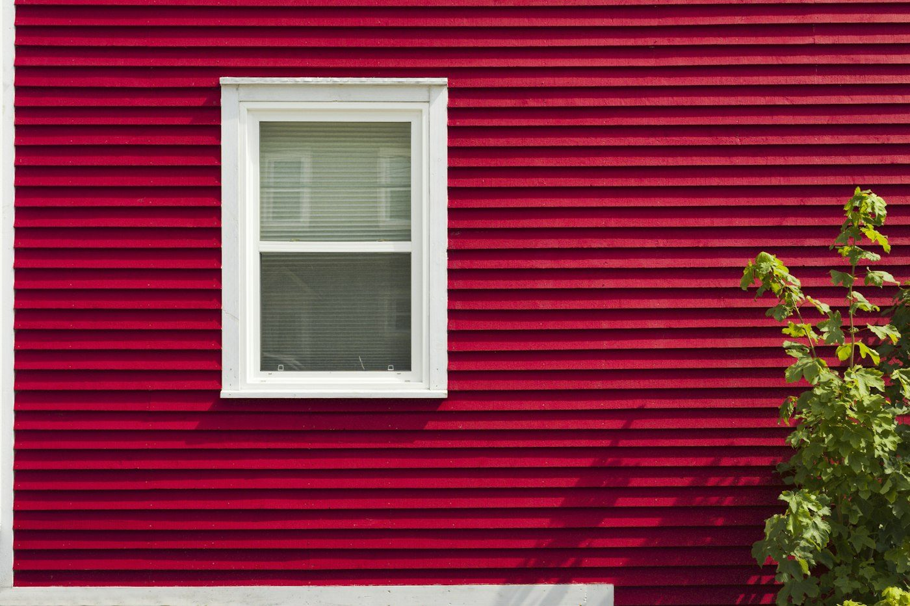
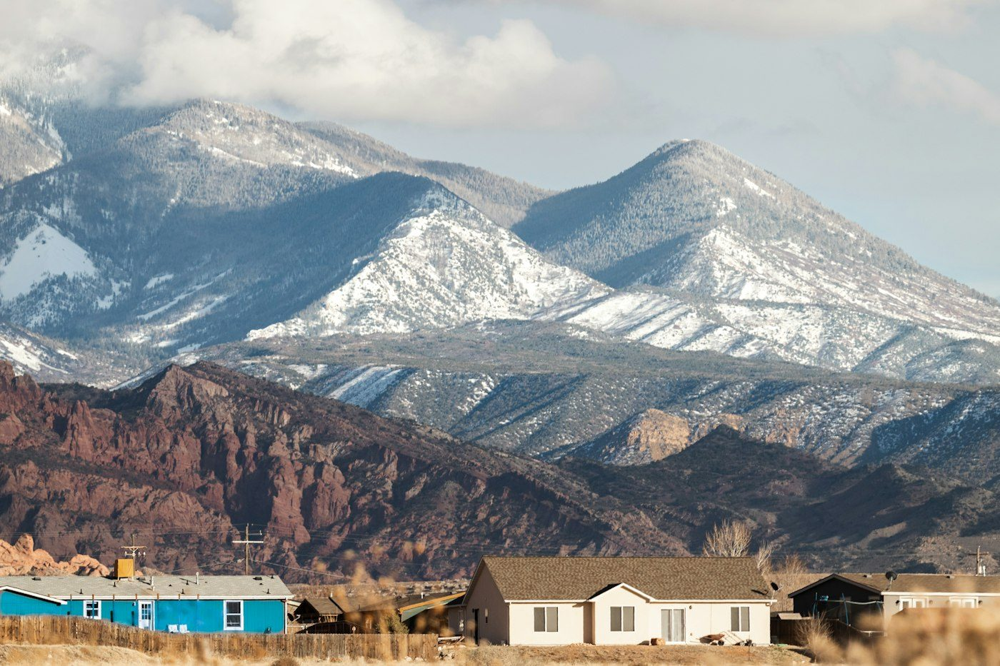

Roofing, siding and gutters in Cedar City.
We handle roof repair, roof replacement, siding and gutters. Call and tell us what you are seeing.

Monday to Friday, 8 to 4
Call ahead to confirmOur services
The roof, the siding and the gutters keep the weather out of a building. We work on all three.
-

Roofing
Your roof stands between you and the rain and storms.
- Roof repair
- Roof replacement
-

Siding
Siding shields the structure from wind and moisture.
-

Gutters
Gutters direct rainwater away from the roof, the siding and the foundation.
Not sure which one your problem falls under? Call and describe it.
Call (833) 323 3280From the ground: four things to look at after a storm
You can see a lot without a ladder. Walk around the building, look up, and make a note of anything on this list.
Missing or lifted shingles
Look at the roof from each side of the building. Note any spot where shingles are gone, and any edge that sits lifted.
Dents or sagging in the gutters
Follow the gutter line with your eyes. Note any dent, and any stretch that sags or hangs away from the roof edge.
Granules washed out by the downspouts
Check the ground where each downspout empties. Granules from the roof can wash out and collect there.
A new stain on a ceiling
Indoors, look up in every room. Note any ceiling stain that was not there before the storm.
Then call (833) 323 3280 and tell us what you noted.

Stay off the roof.Every item here can be seen from the ground. This list is not an inspection.
How it works
Three plain steps, and the first one keeps your feet on the ground.

Look from the ground
Go through the four checks above and note what you see.
Call us
The number is (833) 323 3280. Hours are Monday to Friday, 8 to 4. Call ahead to confirm.
Say what you saw
Tell us if it is the roof, the siding or the gutters, and what you noted.



Hours
- Monday to Friday
- 8 to 4
- Town
- Cedar City, UT
Call ahead to confirm